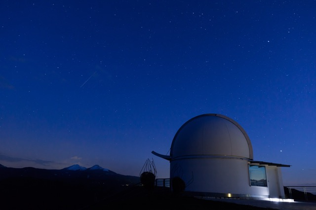

Scientific Photography
Astronomical photography is one of the earliest types of scientific photography and almost from its inception it diversified into subdisciplines that each have a specific goal including star cartography, astrometry, stellar classification, photometry, spectroscopy, polarimetry, and the discovery of astronomical objects such as asteroids, meteors, comets, variable stars, novae, and even unknown planets. These all require specialized equipment such as telescopes designed for precise imaging, for wide field of view (such as Schmidt cameras), or for work at specific wavelengths of light. Astronomical CCD cameras may use cryogenic cooling to reduce thermal noise and to allow the detector to record images in other spectra such as in infrared astronomy. Specialized filters are also used to record images in specific wavelengths.
Since the Earth is constantly rotating, telescopes and equipment are rotated in the opposite direction to follow the apparent motion of the stars overhead (called diurnal motion). This is accomplished by using either equatorial or computer-controlled altazimuth telescope mounts to keep celestial objects centered while the earth rotates. All telescope mount systems suffer from induced tracking error due to imperfect motor drives and mechanical sag of the telescope. Tracking errors are corrected by keeping a selected aiming point, usually a bright guide star, centered during the entire exposure. Sometimes (as in the case of comets) the object to be imaged is moving, so the telescope has to be kept constantly centered on that object. This guiding is done through a second co-mounted telescope called a "guide scope" or via some type of "off-axis guider", a device with a prism or optical beam splitter that allows the observer to view the same image in the telescope that is taking the picture. Guiding was formerly done manually throughout the exposure with an observer standing at (or riding inside) the telescope making corrections to keep a cross hair on the guide star. Since the advent of computer-controlled systems this is accomplished by an automated systems in professional and even amateur equipment..